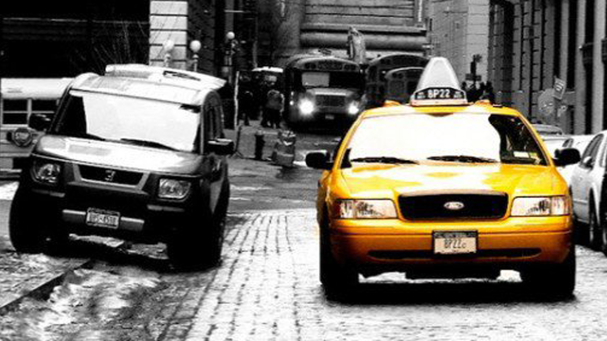
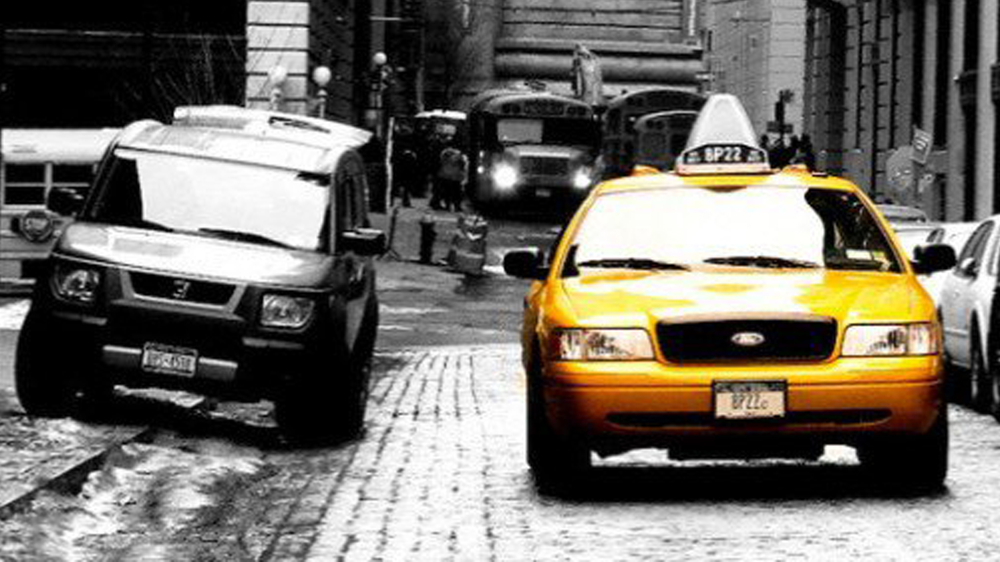

John Cook
Photographe


 

Qui suis-je ?
Auteur-Photographe basé à Lyon,
je développe en parallèle une activité
de photographe commercial,
notamment au service des
entreprises, et une démarche
artistique personnelle qui m’a amené
à exposer mes travaux dans de
nombreux festivals et galeries. Adepte de la
photographie noir et blanc j'aime utiliser
une touche de couleur pour mettre en
avant un élément de la photo.
Un langage pour le photographe :
Le Noir et Blanc accroche les lumières, met les lignes
en valeur et donne une dimension intemporelle et
poétique. C‘est un vrai choix esthétique et artistique.
On ne fait pas la même photographie en couleur et en
Noir et Blanc et il est important d'anticiper à la prise de
vue le rendu d'une photographie en Noir et Blanc ou
en couleur.
Les photos couleur et noir et blanc se pensent
différemment. Il faut d'abord penser à sa photo avant
de photographier.
Le Noir et Blanc est une pratique qui me permet
d'exprimer ma vision personnelle. Il tend vers l'essentiel.
La photographie noir et blanc a davantage de mystère,
de poésie que la photographie couleur, elle a un pouvoir
d'abstraction. La gestion des couleurs est parfois
contraignante.
Galerie du moment:
Au travers de cette galerie, je partage mes dernières
expériences photographiques où se mêlent reportages et
portraits. Cette galerie retrace mes différents documentaires
de mariage ainsi qu'une selection de portraits de mes
dernières séances que j'ai réalisé à Paris.
Cette galerie permet de suivre mon actualité
photographique et de cerner ma vision de photographe de
mariage et de photographe de portrait et témoigne de ma
sensibilité et de mon attachement à une image saisie sur le
vif à la fois poétique et documentaire.
Une prestation adaptée à vos projets photographiques :
Avec une démarche basée sur le photoreportage, je vous propose un autre regard sur la photographie de
mariage et de portrait. Lors d'un reportage de mariage ou d'une séance de portrait, le photographe
doit capter ou susciter les émotions qu'il souhaite traduire au travers de ses photographies.
L'échange entre le photographe et les personnes photographiées est très important dans le reportage de
mariage et la photographie de portrait et je cherche à aller au-delà de la simple relation
client/prestataire.
Je compte avant tout sur votre complicité pour réussir mes images. Dans la photographie de mariage et de
portrait il est essentiel de prendre avant tout du plaisir à ce que l'on fait.
Les photos sont en noir et blanc et couleur, j'accorde une importance particulière au post-traitement
des
photos, celles-ci sont toutes post-traitées une à une, ce qui sera déterminant pour le rendu final du
reportage
ou de la séance portrait.
L'intension photographique se trouve aussi bien dans la prise de vue que dans le travail de laboratoire
(traitement numérique), le travail de post-production permet au photographe de marquer l'image de son
empreinte.
Je propose des prestations personnalisables, à partir de 1750 € pour votre mariage, et 200 € pour une
séance portrait.